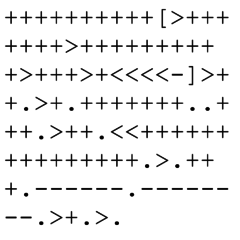

Banyak orang yang mengatakan bahwa belajar bahasa-bahasa pemrograman seperti C, C++, Java, Python, dan lain-lain sangat sulit. Tapi ternyata terdapat bahasa-bahasa pemrograman yang jauh lebih sulit untuk dipelajari dan digunakan, bahkan hampir tidak mungkin untuk digunakan, dibandingkan bahasa-bahasa pemrograman konvensional.
Bahasa-bahasa tersebut disebut sebagai bahasa pemrograman esoterik (esoteric programming language), atau sering disingkat sebagai esolang.
Esoterik berasal dari kata Yunani kuno ἐσωτερικός (esōterikós) yang berarti suatu hal yang diajarkan atau dapat dimengerti oleh sekelompok orang tertentu dan khusus, dapat juga berarti suatu hal yang susah untuk dipahami. Selain itu, esoterik juga berarti hal yang berhubungan dengan konsep-konsep yang sangat teoritis dan tanpa aplikasi praktis yang jelas.
Jadi, bahasa pemrograman esoterik adalah bahasa pemrograman yang aneh atau tidak konvensional, yang sulit untuk dimengerti, dan tidak seharusnya digunakan untuk membuat sebuah program praktis.
Tujuan umum dari bahasa pemrograman esoterik adalah untuk menguji batas-batas dalam desain bahasa pemrograman. Selain itu, suatu bahasa pemrograman esoterik juga memiliki tujuan spesifik pembuatannya.
Tujuan-tujuan spesifik tersebut dapat berupa:
Minimalisme
Bahasa menggunakan jumlah instruksi seminimal mungkin. (Contoh: Brainf*ck)
Konsep-konsep baru
Eksplorasi cara-cara alternatif dalam desain bahasa pemrograman. (Contoh: Befunge)
Keanehan
Bahasa aneh atau sangat berbeda dari bahasa konvensional. (Contoh: INTERCAL)
Kesulitan
Bahasa hampir tidak mungkin digunakan. (Contoh: Malbolge)
Bertema
Bahasa dengan syntax bertema memasak (Contoh: Chef), ataupun bertema drama Shakespeare (Contoh: Shakespeare)
Kesenian
Program berupa karya seni gambar (Contoh: Piet), ataupun karya seni music (Contoh: Velato)
Kesingkatan
Program yang dibuat memiliki source code dengan jumlah byte sesedikit mungkin. (Contoh: GolfScript)
Lelucon
Bahasa yang dibuat dengan tujuan hanya sebagai lelucon. (Contoh: LOLCODE)
Berdasarkan tujuan-tujuan tersebut terdapat beberapa bahasa pemrograman esoterik yang menonjol.
Berikut adalah 10 contoh bahasa pemrograman esoterik yang menarik:
Brainf*ck
Brainf*ck adalah salah satu contoh bahasa Turing tarpit, yaitu bahasa Turing complete yang menggunakan jumlah instruksi seminimal mungkin sehingga sangat tidak praktis untuk digunakan karena level abstraksinya yang sangat rendah.
Bahasa ini dibuat oleh Urban Müller pada tahun 1993, dan merupakan salah satu bahasa pemrograman esoterik yang paling terkenal.
Brainf*ck berjalan di atas sebuah model komputasi yang terdiri atas sebuah program dengan sebuah instruction pointer, sebuah array byte (diinisialisasi dengan 0) berukuran sangat besar dengan sebuah data pointer yang dapat bergerak (diinisialisasi pada cell ke-0 array), dan sebuah stream input dan output.
Sebuah program brainf*ck hanya terdiri atas 8 karakter, tetapi 8 karakter tersebut cukup untuk mensimulasikan sebuah mesin Turing universal sehingga dapat dikatakan sebagai bahasa Turing complete. Ini berarti program apapun yang bisa dibuat dalam bahasa-bahasa Turing complete lainnya seperti C, C++, Java, juga dapat dibuat dalam brainf*ck.

Program Hello World dalam Brainf*ck
Befunge
Befunge adalah salah satu contoh bahasa funge, yaitu bahasa pemrograman dimana programnya dimodelkan sebagai daerah metrik dengan sistem koordinat, dimana instruksi-instruksinya terletak pada titik-titik koordinat tersebut dan dieksekusi jika instruction pointernya memasuki titik tersebut.
Befunge merupakan funge dua dimensi. Jadi, instruction pointer dalam sebuah program bahasa Befunge akan berjalan lurus dan mengeksekusi instruksi-instruksinya, kecuali jika menemukan instruksi ganti arah ke atas, bawah, kiri, atau kanan, dimana setelah instruksi itu instruction pointer akan berganti arah.
Bahasa ini dibuat oleh Chris Pressey pada tahun 1993 dengan tujuan membuat bahasa sesulit mungkin untuk dikompilasi karena alur program yang tak tentu dan juga karena program Befunge dapat mengubah source code-nya sendiri.
Program Hello World dalam Befunge
INTERCAL
INTERCAL, yaitu singkatan dari "Compiler Language With No Pronounceable Acronym" merupakan bahasa pemrograman esoterik yang dibuat sebagai parodi dari berbagai aspek bahasa-bahasa pemrograman zaman itu.
Bahasa ini dibuat oleh Don Woods dan Jim Lyon pada tahun 1972, dan merupakan bahasa pemrograman esoterik pertama yang pernah dibuat.
Keunikan dari INTERCAL adalah syntaxnya yang sangat berbeda dan aneh dari bahasa pemrograman konvensional, yang seringnya redundan dan kriptik. INTERCAL juga memiliki sebuah modifer kesopanan untuk setiap statement yang digunakan karena terkadang kompiler akan menolak program yang kurang sopan ataupun terlalu sopan.
Program Hello World dalam INTERCAL
Malbolge
Malbolge berasal dari nama lingkaran neraka kedelapan dalam Inferno karya Dante.
Bahasa ini dibuat oleh Ben Olmstead pada tahun 1998, tetapi karena kesulitannya program pertama dalam bahasa Malbolge dibuat dua tahun setelah itu.
Kesulian dari bahasa Malbolge berasal dari operasi 'crazy operation' yang harus digunakan, aritmetika base-3, dan kode yang dapat mengubah dirinya sendiri.
Program Hello World dalam Malbolge
Chef
Chef adalah bahasa pemrograman stack-oriented dimana source code programnya terlihat seperti resep masak.
Bahasa ini dibuat oleh David Morgan-Mar pada tahun 2002.
Program Hello World dalam Chef
Shakespeare (Shakespeare Programming Language - SPL)
Chef adalah bahasa pemrograman dimana source code programnya terlihat seperti transkrip dari drama karya penulis Inggris Shakespeare.
Bahasa ini dibuat oleh Jon Åslund dan Karl Hasselström pada tahun 2001.
Piet
Piet dinamakan dari pelukis belanda Piet Mondiran.
Keunikan dari bahasa Piet adalah programnya berupa sebuah karya seni gambar abstrak. Alur jalan program Piet berdasarkan instruction pointer yang bergerak dari bagian gambar ke bagian gambar lain yang berwarna kontigu. Instruksi dilakukan berdasarkan 20 warna tertentu pada file gambarnya.
Bahasa ini dibuat oleh David Morgan-Mar pada tahun 2001.
Program Hello World dalam Piet
Velato
Velato adalah bahasa pemrograman yang menggunakan file MIDI sebagai source codenya. Ini berarti source code dari program dapat juga dimainkan sebagai karya musik.
Instruksi dalam bahasa Velato ditentukan dari pitch dan urutan nada pada file MIDI source codenya.
Bahasa ini dibuat oleh Daniel Temkin pada tahun 2009.
Program Hello World dalam Velato
GolfScript
GolfScript adalah bahasa pemrograman concatenative yang dibuat di atas bahasa Ruby, yang didesain sedemikian rupa sehingga dapat membuat program yang kompleks dengan jumlah byte source code yang pendek.
GolfScript sering digunakan dalam perlombaan code-golf, yaitu lomba pemecahan masalah dengan programming dimana pemenangnya adalah kode program dengan jumlah byte terkecil.
Bahasa ini dibuat pada tahun 2007.
LOLCODE
LOLCODE adalah bahasa pemrograman dengan syntax seperti cara berbicara meme internet lolcats.
LOLCODE sering disebut sebagai bahasa yang tidak terlalu esoterik karena pada dasarnya bahasanya adalah bahasa prosedural biasa dengan vocabulary yang tidak konvensional.
Bahasa ini dibuat oleh Adam Lindsay pada tahun 2007.